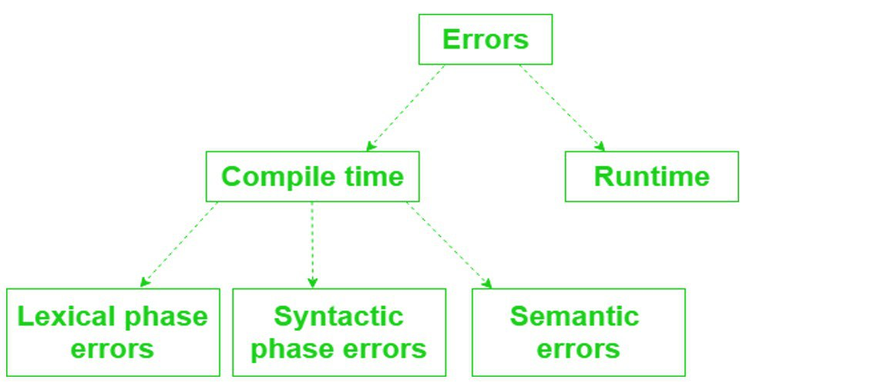

Testing Methods
System testing evaluates the complete, integrated software system to verify that it meets the specified functional and non-functional requirements. A well-tested program handles expected, extreme, and unexpected inputs gracefully while catching various types of errors before deployment.
Learning Objectives
- 12.5.3.2 Perform testing using normal data
- 12.5.3.3 Perform testing using extreme data
- 12.5.3.4 Perform testing using erroneous data
- 12.5.3.1 Describe execution errors at program startup
- 12.5.3.5 Describe a syntax error in a program code
- 12.5.3.6 Describe a logic error in a program code
Conceptual Anchor
The Car Safety Test
Before selling a car, manufacturers test it in normal conditions (city driving), extreme conditions (desert heat, icy roads), and erroneous conditions (what if the driver presses gas and brake simultaneously?). Software testing works the same way to ensure the system is robust and reliable.
Rules & Theory
System Testing
- Definition: A level of software testing that evaluates the complete, integrated software system to verify that it meets the specified functional (what the system should do) and non-functional (how well the system should do it) requirements.
- Why it is needed: There are four primary reasons for system testing:
- Holistic Validation: Ensuring all parts work together as a whole.
- Requirement Compliance: Confirming the software does exactly what the client requested.
- Defect Detection: Finding bugs before the software reaches the user.
- Risk Mitigation: Preventing costly or dangerous failures in real-world application.
Test Plan
What is a test plan?
A test plan is a formal document which details the tests to be performed on the data/software.
It describes:- The scope of the testing
- The tests to be performed
- The reason for each test
- The data to be used in tests
- The expected outcome of each test
Normal / Extreme / Abnormal
Once the test has been conducted, the actual result from the test, along with evidence (e.g. screenshots) is added to the plan.
Types of Test Data
After creating a system, it is necessary to test data to see if it performs under the conditions it was created for. Below is an example validating an age range of 17 to 70.
| Data Type | Definition | Example (Valid age: 17–70) |
|---|---|---|
| Normal | Typical, expected values that fall within the valid boundary and should be accepted by the system. | 25, 40, 55 |
| Extreme (Boundary) | Values at the very edges (upper and lower limits) of the valid range. These should be accepted. | 17, 70 |
| Erroneous (Abnormal) | Values that fall completely outside the boundary or are of the wrong data type. These must be rejected by the system. | 16, 71, "twenty" |
Test Plan Structure
A good test plan must be structured systematically. It should include: the list of tests to be performed, the data to be used, the type of test, the expected outcome, and the actual outcome.
# Program requirement: The system should accept an age range of 17 - 70. Any other data is rejected.
┌────────┬────────┬──────────────────┬──────────────────┬──────────────────┐
│ Test # │ Input │ Test Type │ Expected Outcome │ Actual Outcome │
├────────┼────────┼──────────────────┼──────────────────┼──────────────────┤
│ 1 │ 25 │ Normal │ Accepted │ Accepted │
│ 2 │ 17 │ Extreme (Lower) │ Accepted │ Accepted │
│ 3 │ 70 │ Extreme (Upper) │ Accepted │ Accepted │
│ 4 │ 16 │ Erroneous │ Rejected │ Rejected │
│ 5 │ 71 │ Erroneous │ Rejected │ Rejected │
│ 6 │ "abc" │ Erroneous │ Rejected │ Rejected │
└────────┴────────┴──────────────────┴──────────────────┴──────────────────┘Types of Programming Errors

Video Explanation
Watch a visual walkthrough of this topic
1 Syntax Errors
These errors occur during compilation when the code violates the grammatical rules of the
programming language. The compiler cannot translate the code, which prevents the program from
running at all. Example: missing a parenthesis in print("Hello".
2 Execution Errors at Program Startup
These are runtime exceptions or failures that occur during the initial loading and initialization phase of a software program, right after it begins running but before it reaches its core functionality. They differ from compile-time errors.
- Environmental Mismatch: The program's assumptions about the system (e.g., files, network, hardware) don't match reality.
- Resource Conflicts: Attempts to access locked or unavailable resources early on.
- Dependency Issues: Failure to load required external libraries or modules.
3 General Run Time Errors
As the name suggests, the error is only detectable while the program is running. They produce unexpected application behaviors. Examples include:
- Memory leak: Causes a program to slowly use up more RAM until it crashes.
- Program crash: The program unexpectedly quits while running (e.g., dividing by zero).
4 Logic Errors
Logic errors occur when the program runs perfectly without crashing, but produces the wrong output because of a flaw in the programmer's reasoning. They are categorized into two types:
| Formal Logic Error | Informal Logic Error |
|---|---|
| Also known as "mathematical logic". It is based on Boolean variables (True/False) and logical thinking using AND, OR, and IF/THEN statements. | Happens when the program follows all the rules of coding, but it doesn't solve the problem the way it was intended. |
Example: Writing IF age > 17 AND age < 70 instead of
IF age >= 17 AND age <= 70. The mathematical logic misses the extreme
boundaries.
|
Example: Implementing an algorithm that sorts numbers, but it unintentionally sorts them in descending order when it should have been ascending. |
Additional Testing Strategies
Beyond data input testing, software goes through several phases of validation to ensure robustness.
- Alpha Testing: Conducted by the internal development team in a lab environment before the software is released to external users.
- Beta Testing: Conducted by a limited number of real users in a real-world environment before the final commercial release.
- Dry Run Testing: A manual, paper-based walk-through of the code using a trace table to track variables without actually executing the program on a computer.
- Blackbox Testing: Testing the functionality of the software without looking at the internal code structure. The tester only knows the required inputs and expected outputs.
- Whitebox Testing: Testing the internal structures, logic, and workings of an application. The tester needs full access and knowledge of the source code.
Common Pitfalls
Only Testing Normal Data
Many students only test with "nice" values. Always construct a complete Test Plan that includes Extreme data to test the exact boundaries, and Erroneous/Abnormal data to verify the system rejects bad inputs.
Mixing Up Runtime and Logic Errors
Runtime errors crash the program or halt execution entirely. Logic errors don't crash — the program runs but gives wrong results. If the program unexpectedly quits = runtime. If it runs but the answer is wrong = logic.
Tasks
In pairs, research and prepare for a discussion to demonstrate and explain the concepts of: Alpha testing, Beta testing, Dry run testing, Blackbox testing, and Whitebox testing.
Create a test plan table for a program that accepts a password between 8 and 20 characters. Include columns for Test #, Input, Test Type, Expected Outcome, and Actual Outcome. Include at least 6 tests.
Differentiate between Formal Logic Errors and Informal Logic Errors using an original coding example for each.
Self-Check Quiz
Q1: What are Execution Errors at Startup?
Q2: Why is System Testing important?
Q3: How does Erroneous data differ from Extreme data?